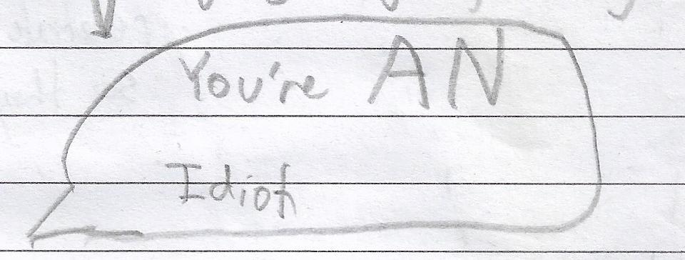

You've probably heard that you have to put 'an' before a noun starting with a vovel. But 'an' starts with a vovel.If you are going to say:

, one
must put an 'an' before the first an, and another and another, and so on, thereby never reaching the 'idiot'. Same goes for 'a': put an 'an' before the 'a' and another one and so on.
By fisik_yum.